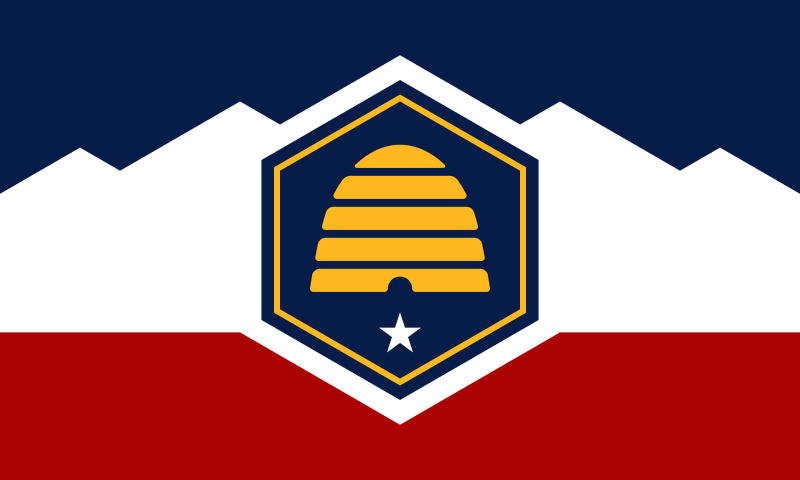

About Me!
My name is Victoria Lutz, I am a visually impaired martial artist and artist in general. I was born and raised in WoodsCross Utah and have stayed here for 24 years. I am currently working as a Veterinary Technician Assistant and love animals!
Utah

Utah is a beautiful state with many things, it's great for hiking, beautiful architecture, and much more!